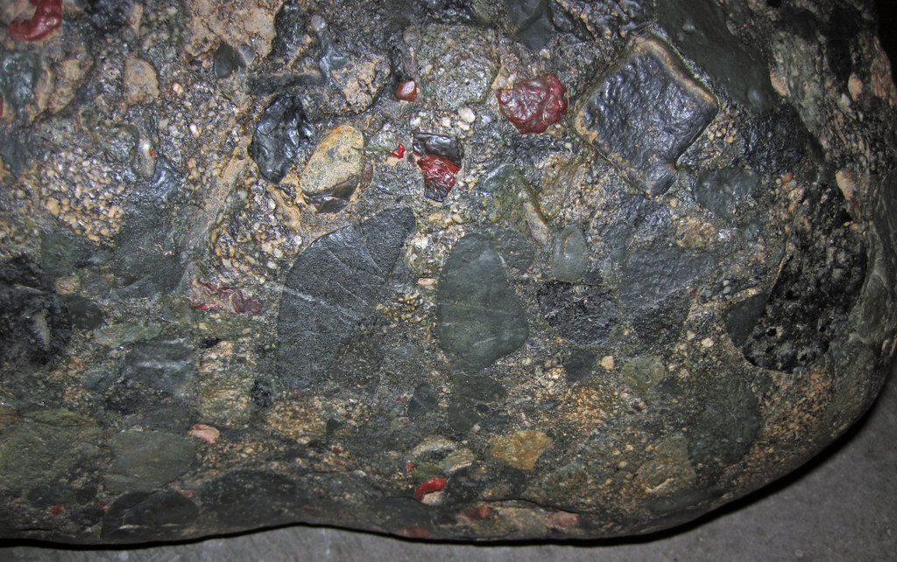
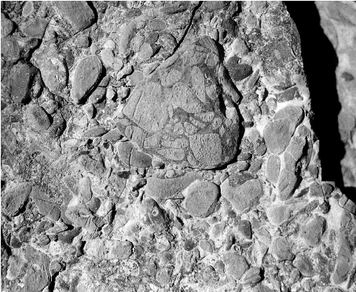
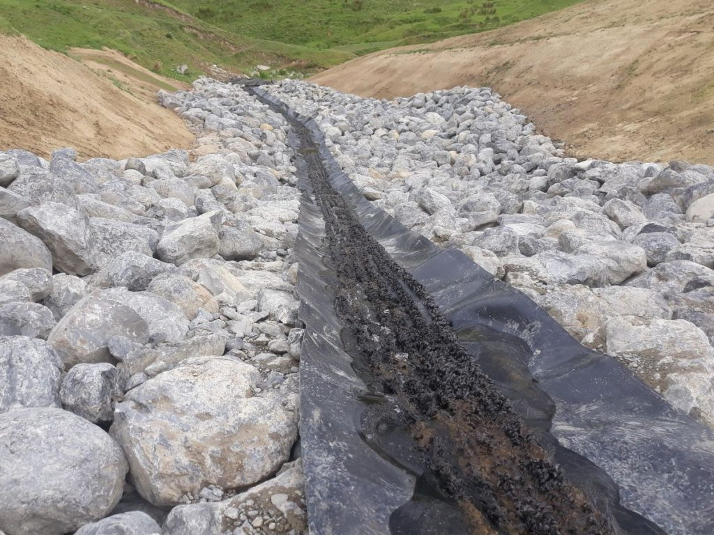
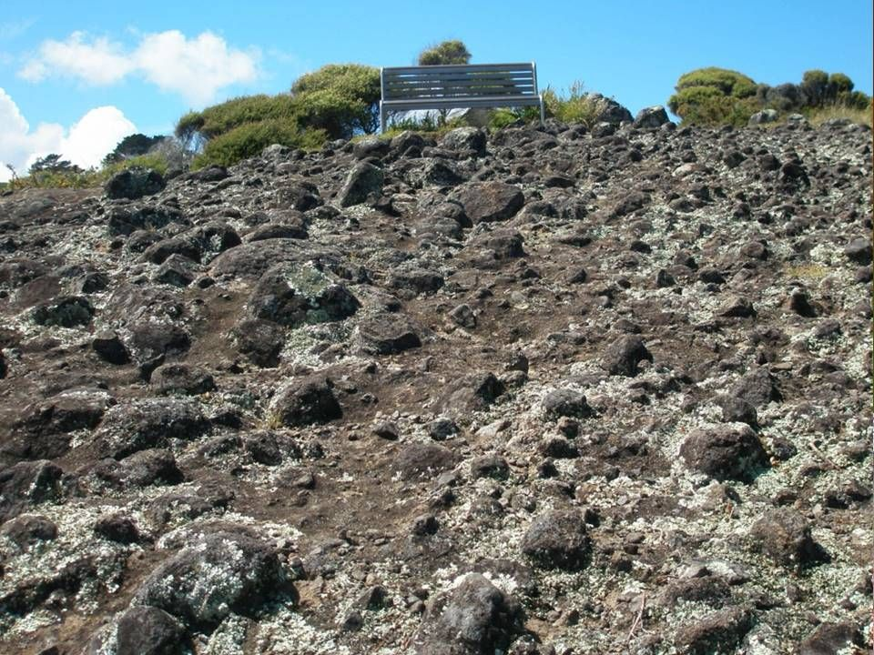

Conglomerate: The Coarse-Grained Sedimentary Rock
Chemical Formula: Variable; composed of different minerals, primarily quartz, feldspar, and lithic fragments
Color: Various (Brown, Grey, Red, Green, Yellow)
Hardness: Varies, typically 2-6 on the Mohs scale depending on clasts and cement
Crystal System: Clastic sedimentary rock
Localities: United States, Canada, India, South Africa, Australia
Common Uses: Construction aggregate, decorative stone, fill material
Conglomerate is a clastic sedimentary rock composed of rounded clasts or fragments that are larger than 2 millimeters in diameter. These clasts, often made of quartz, chert, or other durable rocks, are cemented together by finer-grained sediment and natural mineral cement such as silica, calcite, or iron oxides. Conglomerate forms through the lithification of sediments that accumulate in environments with strong water currents, such as rivers, beaches, or alluvial fans.
Known for its varied appearance, conglomerate can be a mix of many different types of rock and mineral fragments, giving it a distinct texture and color. While it is not as commonly used in jewelry or fine decoration, conglomerate is often employed in construction due to its durability and availability.
Formation and Types of Conglomerate
Conglomerate forms in high-energy environments where water or wind can transport and deposit large, rounded clasts. Over time, these clasts become compacted and cemented together, creating the rock’s characteristic structure. The size, composition, and source of the clasts can vary widely, leading to different types of conglomerate.
Key Types of Conglomerate:
1. Orthoconglomerate

This type of conglomerate has a well-cemented matrix, with a high proportion of clasts and minimal finer sediment between them. Orthoconglomerates are typically formed in high-energy environments such as rivers or beaches.
2. Paraconglomerate

Paraconglomerate contains more fine-grained matrix material than orthoconglomerate, meaning the clasts are not as densely packed. This type of conglomerate often forms in lower-energy environments, such as river deltas or alluvial fans.
3. Polymict Conglomerate
Polymict conglomerate consists of clasts from a variety of different rock types. This indicates that the sediment has been transported over long distances, mixing various sources along the way.
4. Oligomict Conglomerate

Oligomict conglomerate is composed of clasts from a single rock type, usually highly resistant materials such as quartz or chert. These clasts tend to remain unchanged during transport.
5. Intraformational Conglomerate
Intraformational conglomerate forms within a single depositional environment, typically from the reworking of sedimentary material within a basin. This type is common in shallow marine settings.
Structure and Properties of Conglomerate
Conglomerate’s structure is defined by its clasts, which are bound together by a finer-grained matrix or cement. The large clasts are typically rounded due to the physical weathering they undergo before being deposited. The properties of conglomerate depend on the types of clasts and the nature of the matrix or cement holding the rock together.
- Hardness: The hardness of conglomerate varies depending on the clasts and the cementing material, typically ranging from 2 to 6 on the Mohs scale.
- Color: Conglomerate can appear in a wide range of colors, including brown, grey, red, green, and yellow. The color is influenced by the clasts and the cementing minerals, such as iron oxides, which give a reddish hue.
- Porosity: Conglomerate can have varying degrees of porosity, depending on how tightly packed the clasts are and the amount of matrix between them.
- Clast Size and Shape: Clasts in conglomerate are typically larger than 2 millimeters and are rounded, indicating they have been transported by water or wind over a considerable distance.
- Cementation: The matrix of a conglomerate can consist of finer sediments like sand or silt, and it is often cemented by minerals such as silica, calcite, or iron oxide.
Uses of Conglomerate
While conglomerate is not commonly used in fine construction or decoration, it serves important functions in more practical applications. Its durability and abundance make it suitable for several industrial and architectural purposes.
1. Construction Material
Conglomerate is used as a construction aggregate in the production of concrete and other building materials. Its large clasts and overall strength make it useful for foundational work.
- Aggregate and Fill Material: Conglomerate is crushed and used as aggregate for roads, railways, and construction foundations. Its natural strength and hardness contribute to the durability of structures.
- Riprap: In areas prone to erosion, conglomerate can be used as riprap, a layer of large stones placed along shorelines or riverbanks to protect against water erosion.
2. Decorative and Architectural Stone
Due to its unique appearance, conglomerate can sometimes be used decoratively in architecture and landscaping.
- Interior Design and Landscaping: Conglomerate slabs can be used in flooring or wall cladding, providing a rustic and natural aesthetic. Its mix of colors and textures makes it an attractive option for outdoor landscapes, such as garden paths and retaining walls.
- Monuments and Sculptures: In rare cases, conglomerate has been used in sculptures or monuments, particularly when the stone’s variety of clasts and colors can enhance the artistic value of the piece.
3. Aquifers
Conglomerate, depending on its porosity, can act as an aquifer, storing groundwater in the spaces between clasts. This property makes it an important resource in regions where groundwater extraction is essential for agriculture and human consumption.
- Groundwater Storage: In areas with porous conglomerate, water can flow through the rock’s matrix, making it a natural reservoir for groundwater, similar to sandstone.
Unusual Varieties of Conglomerate
Certain varieties of conglomerate are notable for their unique clasts or the environments in which they form, leading to special uses or geological interest.
1. Diamictite

Diamictite is a variety of conglomerate that forms in glacial environments and includes a wide range of clast sizes, from fine sediment to large boulders. It provides valuable insight into past glacial activity.
2. Puddingstone

Puddingstone is a type of conglomerate known for its smooth, rounded clasts embedded in a fine-grained matrix. It often has aesthetic appeal due to its contrasting colors and has been used decoratively and in jewelry.
3. Volcanic Conglomerate
Volcanic conglomerate forms near active volcanoes, where volcanic debris is mixed with clasts from other rock types. It provides clues to volcanic activity and the nature of the surrounding landscape.
Sourcing Locations of Conglomerate
Conglomerate deposits are found worldwide, particularly in regions where ancient rivers, glaciers, or coastal processes left behind thick layers of sediment. Some of the most famous conglomerate formations provide insights into past environments and climates.
- United States: The Boulder Conglomerate in Colorado is a well-known formation that provides insight into the region's geologic history. The Piedmont region in the eastern United States also contains numerous conglomerate deposits.
- Canada: In British Columbia, conglomerate formations are widespread and are often mined for construction aggregate and decorative stone.
- India: Himalayan conglomerates are rich in quartzite and are often used in construction and as aggregate for roads and buildings.
- South Africa: Witwatersrand Conglomerates are famous for containing gold deposits and have been mined for over a century, providing significant economic value.
- Australia: The Bungle Bungle Range in Western Australia contains spectacular conglomerate formations that draw both geological interest and tourism.
Exploration and Mining of Conglomerate
The exploration and mining of conglomerate focus on regions where this rock is exposed or near the surface, often in river valleys, coastal areas, or mountainous regions. These rocks are commonly extracted for use in construction and other industries.
Exploration
Geologists identify conglomerate deposits through field mapping and subsurface geological surveys. Sedimentary basins, ancient riverbeds, and alluvial fans are typical locations where conglomerate is likely to be found. In some cases, conglomerate deposits can indicate the presence of valuable minerals, such as gold.
Mining Methods
Conglomerate is typically extracted through open-pit mining or quarrying, depending on the size and location of the deposit. The rock is then crushed or cut into the appropriate size for its intended use.
- Processing for Aggregate: Once extracted, conglomerate is crushed and sorted for use as aggregate in construction. Larger clasts are often used in foundation work, while smaller fragments are suitable for road building and other applications.
Processing
Conglomerate used for decorative purposes is often cut into slabs and polished, bringing out the texture and color contrasts in the rock. If conglomerate is used in construction, it is typically broken down into smaller fragments or used in its natural rough form.
Metaphysical Properties of Conglomerate
Conglomerate, like many other stones, is valued for its symbolic and metaphysical properties. Its combination of various minerals and rock types is thought to imbue it with grounding and stabilizing energy.
- Unity and Strength: Conglomerate’s formation with different types of rocks coming together to create a single, solid material symbolizes unity and strength. It is often associated with creating a sense of community and bringing together different elements harmoniously.
- Grounding and Stability: Because conglomerate forms in environments of high energy, it is believed to help individuals stay grounded during times of stress or change, providing stability and a sense of control.
- Balance and Adaptability: Conglomerate’s ability to hold together a variety of rock types and minerals is seen as a metaphor for balance and adaptability, helping individuals integrate different aspects of their lives.
Famous Finds and Conglomerate
Conglomerate formations can be found in many famous geologic landmarks and have played a significant role in our understanding of past environments and climate changes.
1. The Old Red Sandstone (United Kingdom)
The conglomerate layers within the Old Red Sandstone of Scotland and Wales provide evidence of ancient river systems that once flowed across the region during the Devonian period.
2. Witwatersrand Basin (South Africa)
The Witwatersrand conglomerates are famous for their rich gold deposits, which have made South Africa one of the world's leading gold producers. These conglomerates formed in ancient river systems over 2.7 billion years ago.
3. Boulder Conglomerate (Colorado, USA)
This conglomerate found near Boulder, Colorado, contains a variety of well-rounded quartzite and other clasts, providing geologists with insights into the ancient landscapes of the Rocky Mountains.
Caring for Conglomerate
While durable, conglomerate requires proper care when used in decorative applications, particularly if it contains a matrix or cement that is prone to weathering.
- Cleaning: Use a mild detergent and water to clean conglomerate surfaces. Avoid abrasive cleaners that could damage the cementing material between clasts.
- Sealing: If used outdoors or in wet environments, conglomerate may benefit from a protective sealant to prevent water infiltration, which could weaken the matrix over time.
- Handling: When using conglomerate for decorative or architectural purposes, care should be taken to handle the rock gently, especially if the clasts are loosely cemented.
Conclusion
Conglomerate is a versatile and fascinating sedimentary rock, valued for its durability and unique appearance. Formed in high-energy environments like rivers and beaches, this rock offers valuable insight into ancient landscapes while also serving practical purposes in construction and architecture. Whether used as aggregate in concrete or as a decorative stone, conglomerate continues to be an important resource in both geology and industry.
See Also
- Related Rocks: Breccia, Sandstone, Limestone
- Relevant Topics: Conglomerate Mining, Sedimentary Rock Formation, Historical Uses of Conglomerate